Documentation du Projet(php pur)
Les principales fonctionnalités
1. Page d'authentification (index.php)
1.1 Login: Authentification
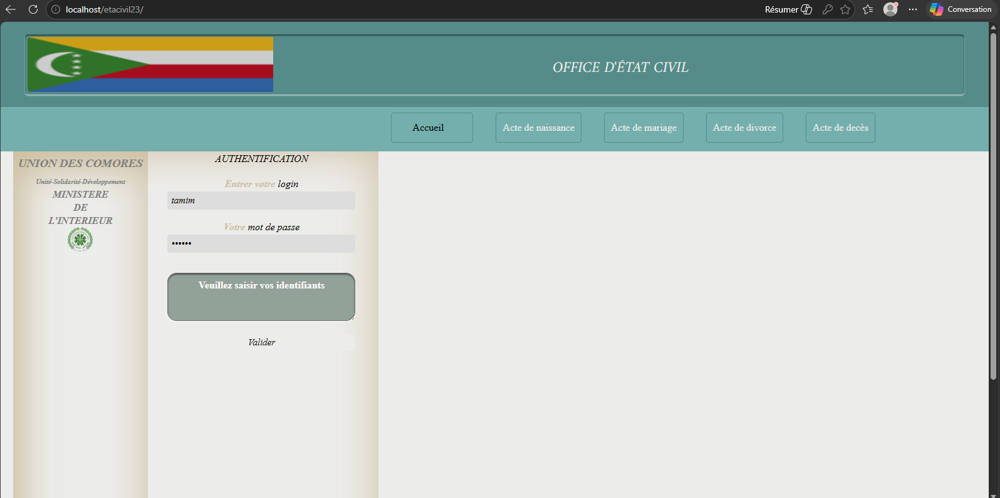
- Capture login/passwd saisis: $_POST["pseudo_] / $_POST["motdepasse_]
- Comparaison aux valeurs table listeofficiers: $sql= select * from listeofficiers WHERE pseudo=$_POST["pseudo_] AND ...
- Stockage valeur user dans une variable session: $_SESSION["user_role"] = $row["user"];//🎁 pour la gestion des droits
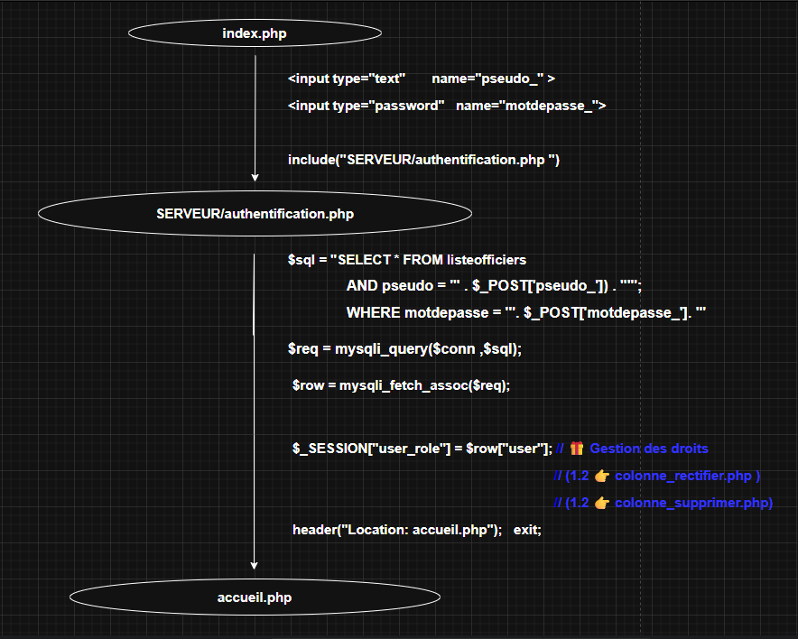
1.2 Gestion des droits d'accès
Seuls les utilisteurs connectés avec un compte "admin" ont les droits de rectifier un document erroné ou de supprimer un faux document. Dans la pratique, ces privillèges reviennent seulement aux préfets.
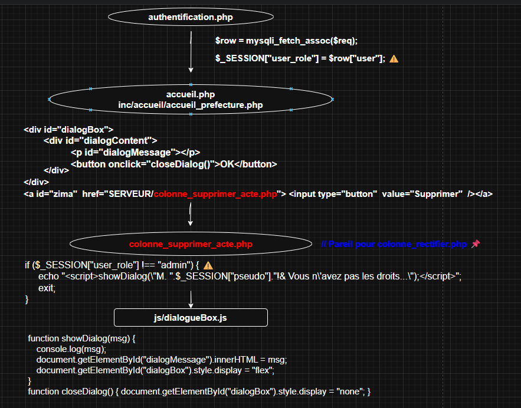
1.3 Gestion des utilisateurs (Ajouter un utilisateur, supprimer un utilisateurs, Afficher tous les utilisateurs)
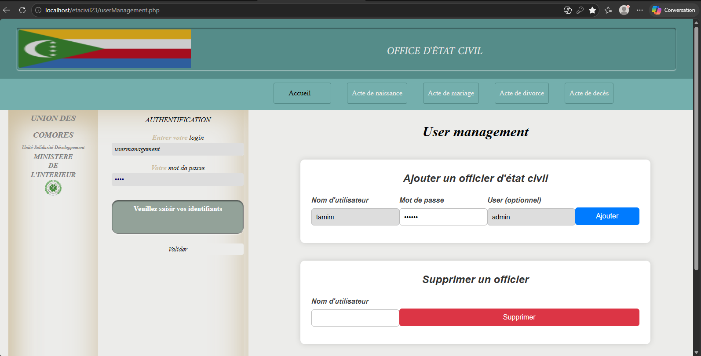
Ajouter/Suprimer un officier d'état civil( userManagement.php )
- Ajouter un officier d'état civil
- Allouer un rôle "admin" à un officier d'état civil(On le supprime et on le rajoute en tant qu'admin)
- Retirer le rôle "admin" à un officier d'état civil(On le supprime et on le rajoute sans admin)
- Supprimer un officier d'état civil
- Ni consulter les documents,
- ni manipuler les données.
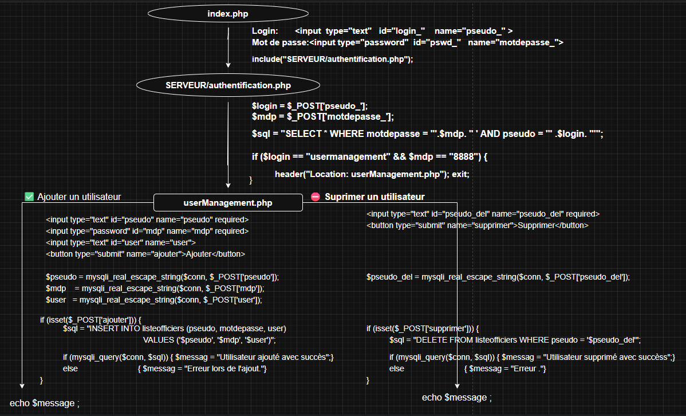
Afficher tous les officiers d'état civil( userManagement.php )
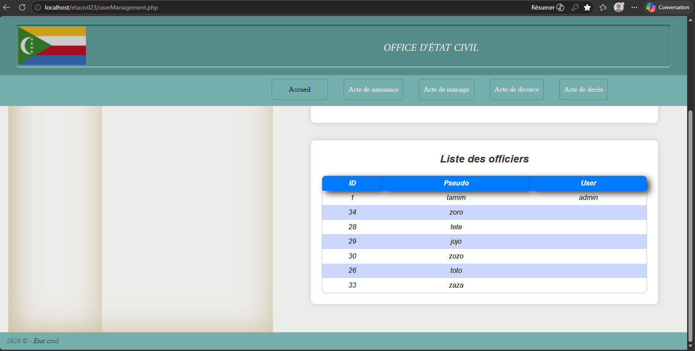
On ajoute le traitement dans la même page( php au-dessus de html).
Pas conventionnel mais facil à gerer( la meilleurs c'tjrs la plus simple !)
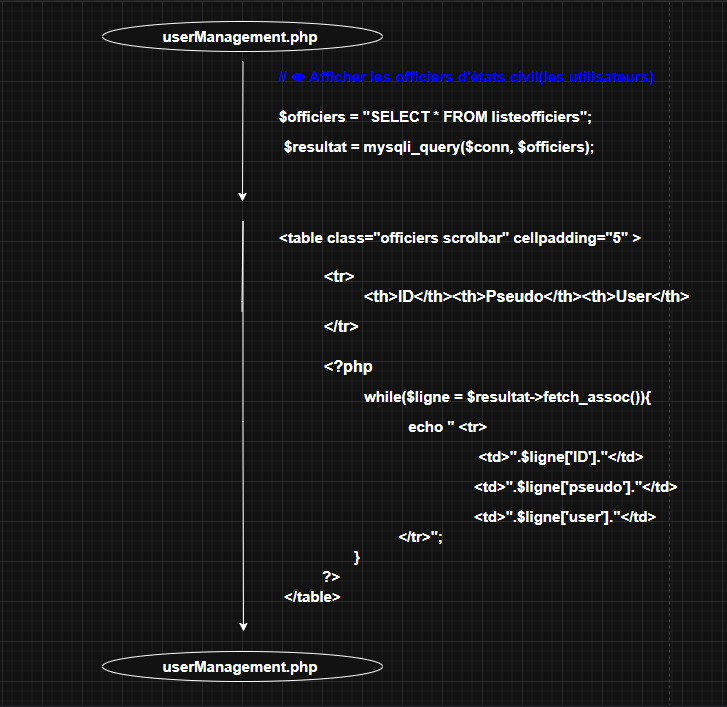
2. Page d'accueil (accueil.php)
2.1 Ouverture de la table: "Afficher"
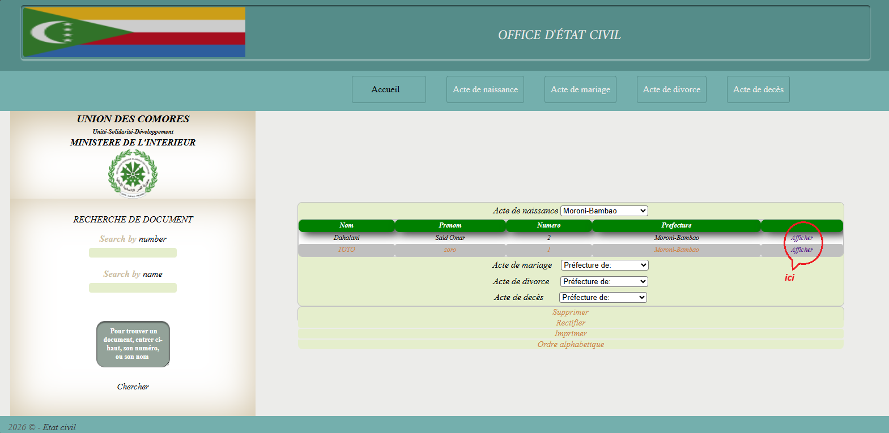
- Choisir la table(Capture de la prefecture):Quelle table ouvrir
✔️ accueil_choisir_naissance.php → <select onchange="captureCombo(this.value)">
✔️ capture_item.js → function captureCombo(prfctr) → colonne_afficher_naissance.php?p="+prfct - Ouverture du panel:
✔️ accueil_prefecture.php → <td class="listemenu" id="flip"> <div id="panel" class="scrolbar">
✔️ accueil.commandes_panel.js → $("#flip").click(function(){ $("#panel").slideToggle("slow");}); - Chargement de la table:
✔️ capture_item.js → function captureCombo(prfctr) {
✔️ xmlhttp.open("GET","SERVEUR/colonne_afficher_naissance.php?p="+prfctr,true )
✔️ document.getElementById("panel").innerHTML = xmlhttp.responseText;
le chargement se fait differement:
- Chargement des la tables:
✔️ accueil.commandes_panel.js → jQuery
✔️ $(' a#rectif, a#zima , a#print_ , a#trier ').click(function(e){
✔️ $('#panel').load($(this).attr('href'));
✔️ });
- <a id="zima" href="SERVEUR/colonne_supprimer_acte.php"> <input type="button" value="Supprimer" />
- <a id="rectif" href="SERVEUR/colonne_rectifier_acte.php"> <input type="button" value="Rectifier" />
- <a id="print_" href="SERVEUR/colonne_imprimer_acte.php"> input type="button" value="Imprimer" />
- <a id="trier" href="SERVEUR/trier.php"> <input type="button" value="Ordre alphabétique"/>
Si au préalable on ne choisi pas la table, on ne peut pas l'ouvrir. Un bug s'impose
C'est pourquoi un alert est posé au dessus de ces 4 boutons.
Etape1: Capture de la prefecture cliquée:Quelle table ouvrir

Etape2: Ouverture du panel

Etape3: Chargement de la table
 Brouillon
Brouillon
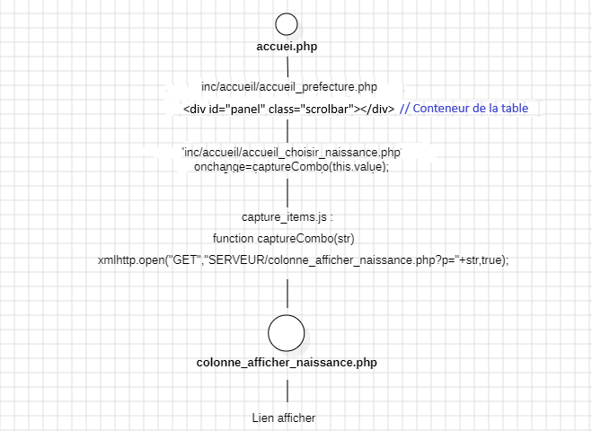
2.2 Afficher le document → lien "Afficher"
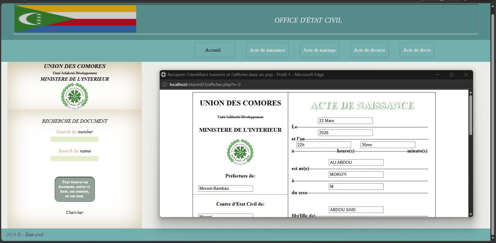
- Arborescence vers l'affichage du document( dans un popup )
- ...
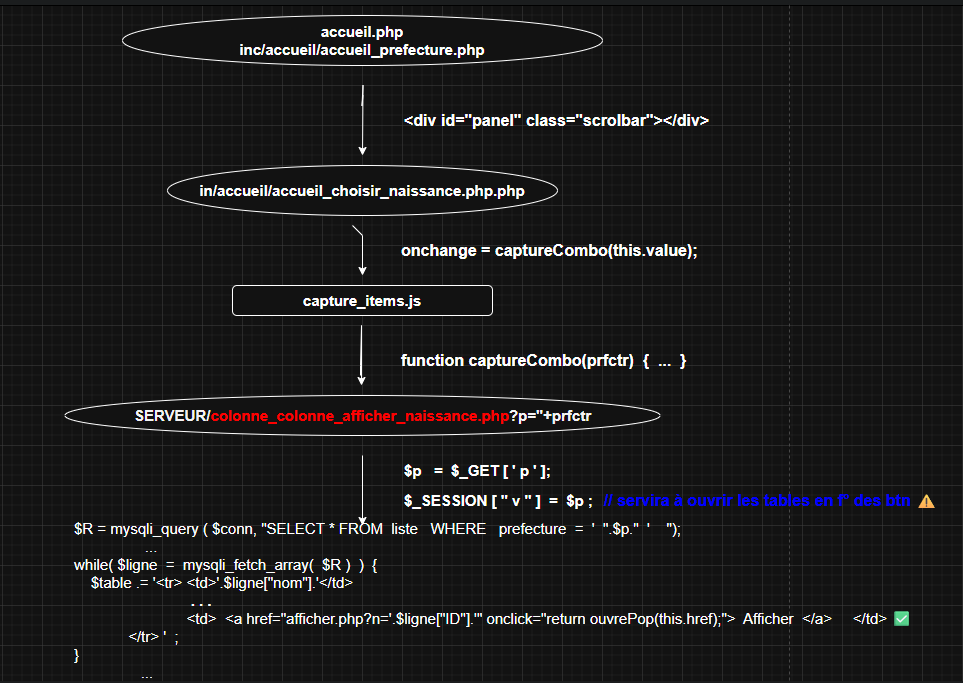
Chaque bouton affiche un lien à la dernière colonne de la table(à la place du lien "Afficher").
Et le lien traite la fonction.
2.3 Fonction: "Imprimer"
L'affichage de la table et l'appel au fichier de traitement sont assurés par un script jQuery( js/accueil_commandes_panel.js ).
C'est une solution jQuery qui fait du AJAX :
- Intercepter un clic, empêcher la navigation, charger du contenu dans un panel de la page d'accueil.
- Elle ouvre le panel
- Elle charge une table dans ce panel
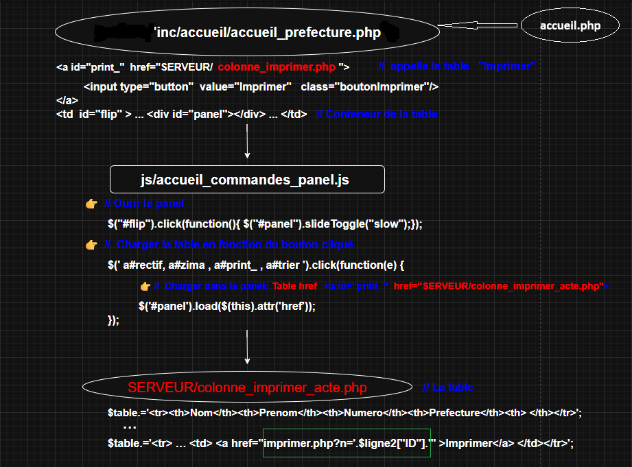
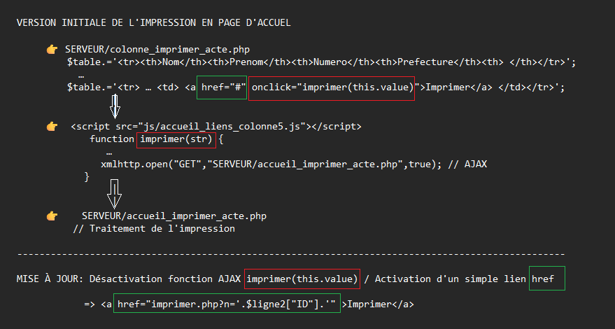
2.4 Fonction: "Rectifier"
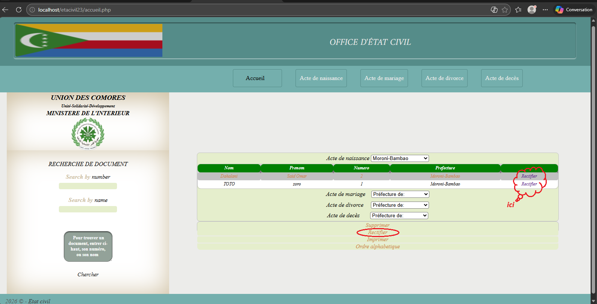
- "js/accueil_commandes_panel.js" renvoie à la table "SERVEUR/colonne_rectifier_acte.php"
- Et cette table renvoie à la page "modifier_.php" en la transmettant les données par url
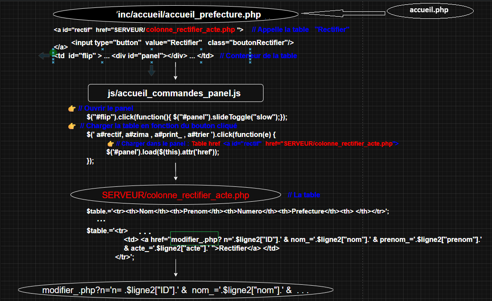
2.5 Fonction: "Supprimer"
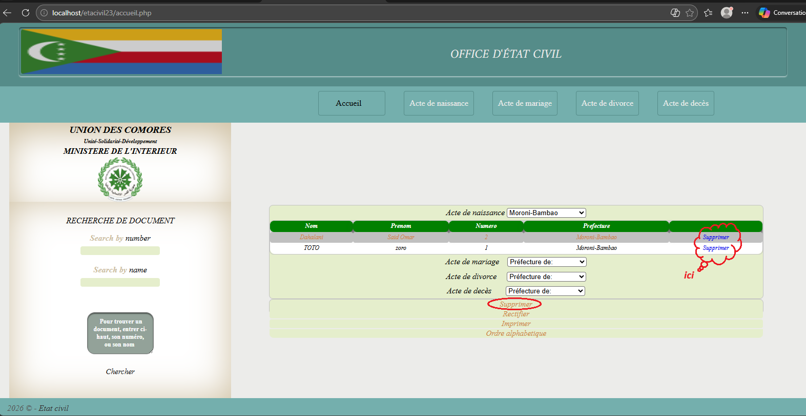
- accueil_commandes_panel.js capture le bouton "Supprimer" pour ouvrir le panel et charger la table "colonne_supprimer_acte.php"
- La table colonne_supprimer_acte.php appelle le fichier "supprimer.php"
- Le fichier "supprimer.php" traite la suppression.
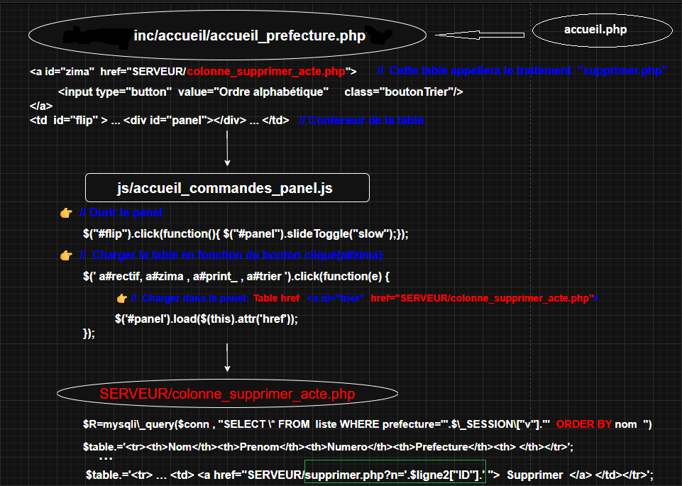
2.6 Fonction: "Trier"
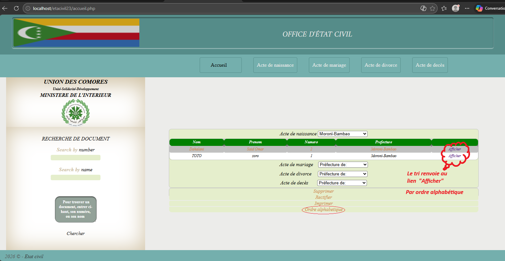
accueil_commandes_panel.js capture la commande "Ordre alphabétique" pour faire les 2 tâches suivantes:
- Ouverture d'un conteneur dans la page d'accueil: Un panel
- Chargement du fichier "trier.php" dans ce panel
Ce fichier "trier.php" contient: Une table et son traitement( tri document par ordre alphabétique des noms )
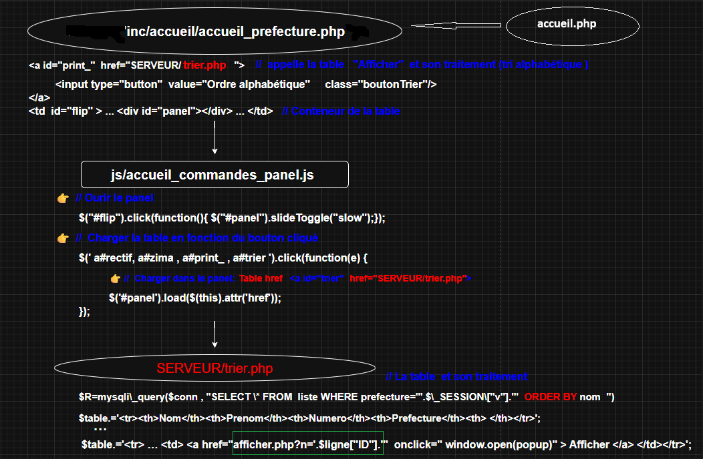
Quant au fichier afficher.php?n='.$ligne["ID"].' :
Il récupere l'identifiant transmis, pour extraire les données relatives, et les mettre sur un document formaté (inclu dans un popup).
Le popup est défini dans "trier.php", suite à l'action sur le lien "Afficher".
2.7 Fonctionnalité: "Recherche de document"
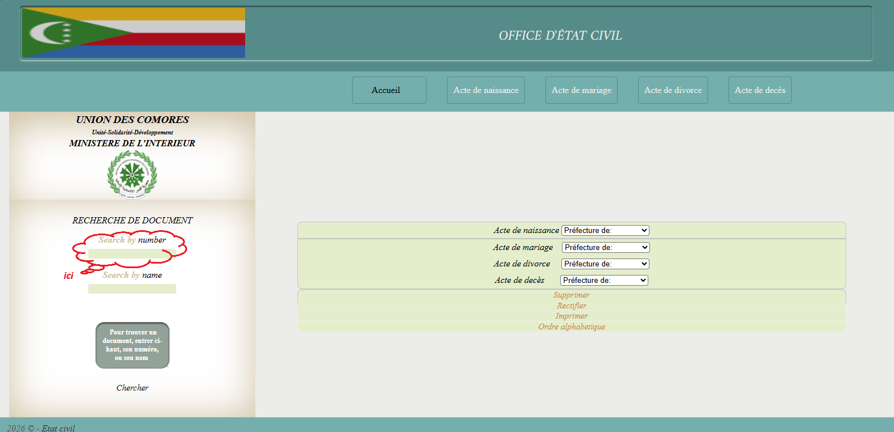
2.7.1 Recherche par: "Numéro de document"
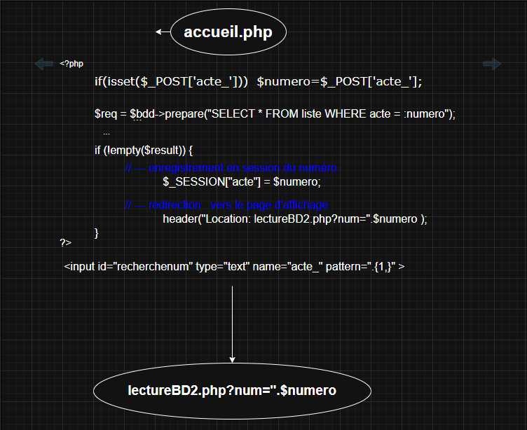
2.7.2 Recherche par: "nom"
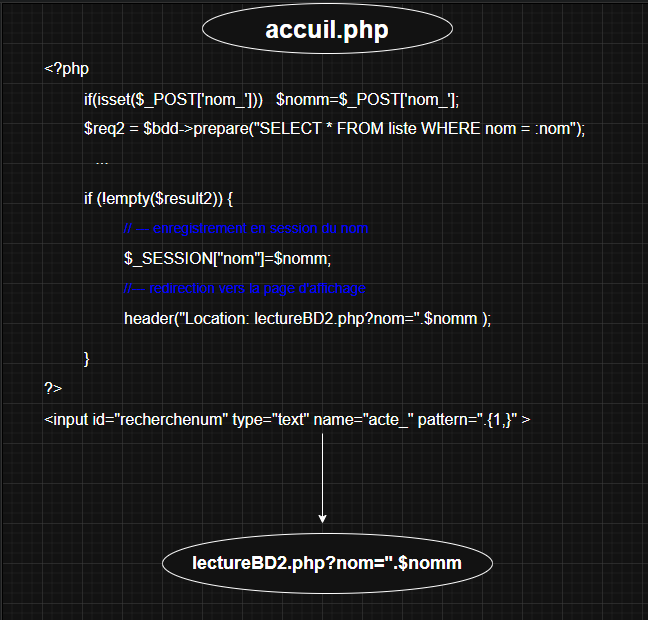
3. Affichage du résultat de la recherche (lectureBD2.php)
3.1 Résultat trouvé de la recherche par numéro
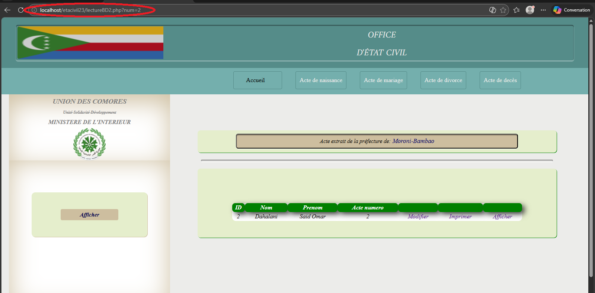
- L'affichage du résultat de recherche "by number" est fait dans lectureBD2.php, par : SERVEUR/lectureBD2_searchPlayBack.php
- num provient de la page "accueil.php" ⇒ header("Location:lectureBD2.php?num=".$numero ); 👉 voir 2.7.1
- "lectureBD2.php" ⇒ if(!empty($_GET['num'])) { include("SERVEUR/lectureBD2_searchPlayBack.php"); }
- ...
- Les traitements du résultat de recherche par numéro seront donc appellés par: SERVEUR/lectureBD2_searchPlayBack.php

3.2 Résultat trouvé de la recherche par nom
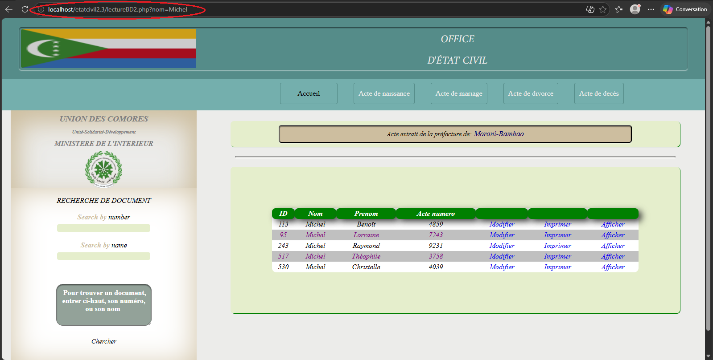
- L'affichage du résultat de recherche "by name" est fait dans lectureBD2.php, par : SERVEUR/lectureBD2_searchPlayBackByName.php
- nom provient de la page "accueil.php" ⇒ header("Location: lectureBD2.php?nom=".$nomm ); 👉 voir 2.7.2
- "lectureBD2.php" ⇒ if(!empty($_GET['nom'])) { include("SERVEUR/lectureBD2_searchPlayBackByName.php"); }
- ...
- Les traitements du résultat de recherche par nom seront donc appellés par: SERVEUR/lectureBD2_searchPlayBackByName.php
4. Traitement du résultat de recherche: Le document trouvé (lectureBD2.php)
4.1 Afficher: Le document trouvé(suite à la recherche éffectuée en page d'accueil)
- lectureBD2_searchPlayBack.php( si recherche par num).
- lectureBD2_searchPlayBackByName.php( si recherche par nom).
- <a id="lien" href="#" onclick="popup_lectureBD2();"> Afficher </a>
- onclick="popup_lectureBD2(); ⇒ renvoie à lectureBD.js(ligne158)
- lectureBD.js ⇒ function popup_lectureBD2() { wind'ow.open("afficherdanspop.php",'Popup','...ici définition d'un popup d'affichage...' }

4.2 Imprimer: Le document trouvé(suite à la recherche éffectuée en page d'accueil)
- lectureBD2_searchPlayBack.php( si recherche par num).
- lectureBD2_searchPlayBackByName.php( si recherche par nom).
- <a href="imprimer.php?n='.$donnees["ID"].'"> Imprimer </a>
4.3 Modifier: Le document trouvé(suite à la recherche éffectuée en page d'accueil)
- lectureBD2_searchPlayBack.php( si recherche par num).
- lectureBD2_searchPlayBackByName.php( si recherche par nom).
- href="modifier_.php?n='.$donnees["ID"].' & nom_='.$donnees["nom"].' & prenom_='.$donnees["prenom"].' & ... etc
Remarque
Il serait préférable de rassembler les 3 traitements du résultat de recherche(Afficher, Imprimer, modifier) dans un même fichier aulieu de les faire dans deux fichiers séparés(lectureBD2_searchPlayBack.php et lectureBD2_searchPlayBackByName.php)
5. Nouveau document 👉 ecritureBD.php
5.1: Nouvel acte(btn Enregistrer)
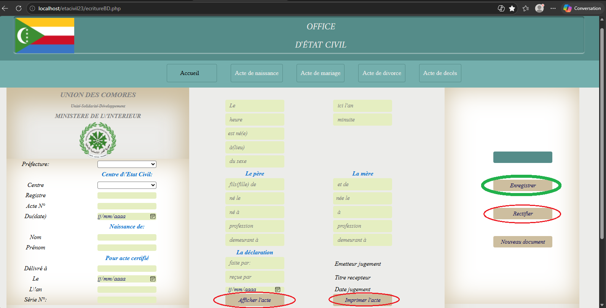
5.2: Nouvel acte(btn Afficher)

5.3: Nouvel acte(btn Imprimer)

5.4: Nouvel acte(btn Rectifier)
Seuls les utilisteurs connectés avec un compte "admin" ont les droits de rectifier
un document erroné ou de supprimer un faux document. Dans les pratique, ces privillèges
reviennent seulement aux préfets.👇
Dans le cas de saisie d'un nouveau document, la "rectification" n'est pas restreinte.
Elle est accessible à l'agent administratif ordinaire, qui saisi le nouveau document.
• Si le bouton "Enregistrer" n'est pas encore actionné:
↬ On recharge les données dans tous les champs de saisie ✍️
• Si le bouton "Enregistrer" est actionné:
↬ On redirige vers modifier.php avec transmission du numero de l'acte: modifier_.php?acte_=N° ✍️

6: Rectification de document 👉 modifier_.php
6.1: Rectification (btn Enregistrer)
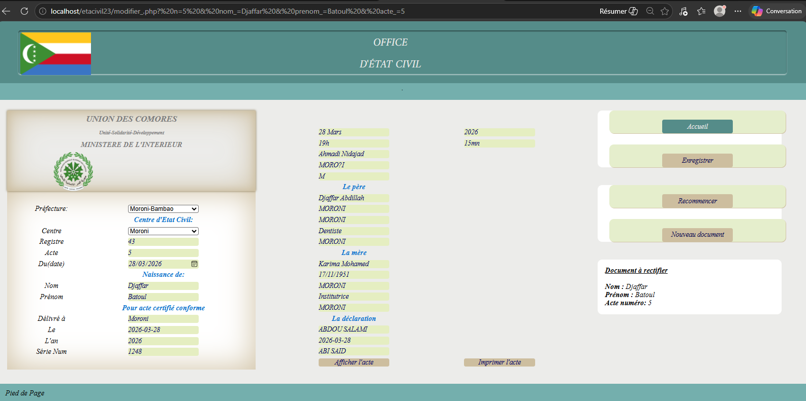
6.2: Rectification(btn Afficher)

6.3: Rectification(btn Imprimer)

6.4: Rectification(btn Recommencer)
Seuls les utilisteurs connectés avec un compte "admin" ont les droits de rectifier
un document erroné ou de supprimer un faux document. Dans les pratique, ces privillèges
reviennent seulement aux préfets.👇
• Si le bouton "Enregistrer" n'est pas encore actionné:
↬ On recharge les données dans tous les champs de saisie ✍️
• Si le bouton "Enregistrer" est actionné:
↬ On redirige vers modifier.php avec transmission du numero de l'acte: modifier_.php?acte_=N° ✍️
7. Affichage des documents 👉 lectureBD.php
7.1 Afficher (table)


✔️ window.open(...popup..) est remplacé par la fonction ouvrePop(\'afficher.php?n='.$ligne['ID'].'\')
✔️ function ouvrePop(url){...} se trouve dans lectureBD.js
7.2: Afficher (document)
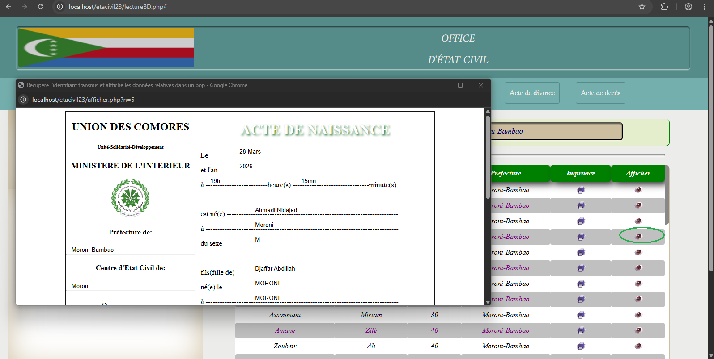

7.3: Imprimer (document)
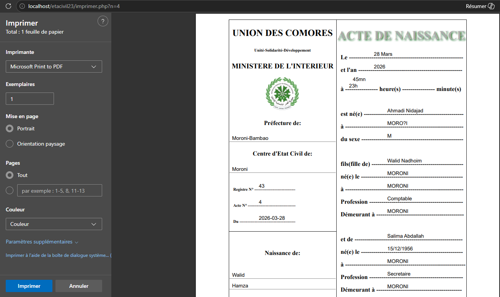
C'est le même schémas que "7.2 Afficher(document)". La seule differrence:
👉 Le lien "Afficher" renvoie vers href="afficher.php?n='.$ligne["ID"].'"
👉 Le lien "Imprimer" renvoie vers href="imprimer.php?n='.$ligne["ID"].'"
8. Base de données 👉 etatcivil.sql
8.1 listeofficiers (table utilisateurs - agents administratifs)
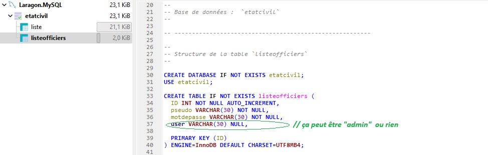
Version copier/coller :
CREATE TABLE `listeofficiers` (
`ID` INT(10) NOT NULL AUTO_INCREMENT,
`pseudo` VARCHAR(30) NOT NULL COLLATE 'utf8mb3_unicode_ci',
`motdepasse` VARCHAR(30) NOT NULL COLLATE 'utf8mb3_unicode_ci',
`user` VARCHAR(30) NULL DEFAULT NULL COLLATE 'utf8mb3_unicode_ci',
PRIMARY KEY (`ID`) USING BTREE
)
COLLATE='utf8mb3_unicode_ci'
ENGINE=MyISAM
AUTO_INCREMENT=10
;
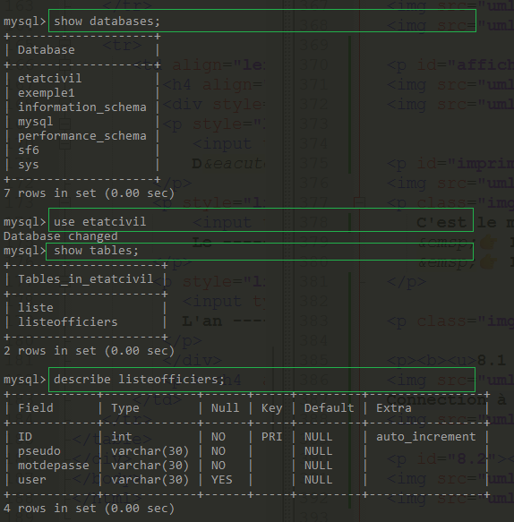
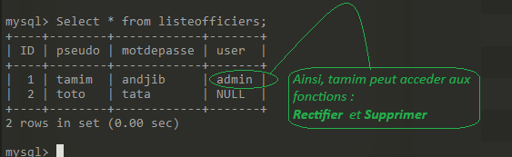
Refactoring :
Pour la coherence du model de donnéees, il faut renommer le champs user en roles.Deux précautions préalables:
✔️ Poser un commit de backup
✔️ Opérer dans une nouvelle branche(merge par la suite)
Cela implique non seulement la table listeofficiers mais aussi toute la logique applicative.
8.2: liste (table stockage des documents)
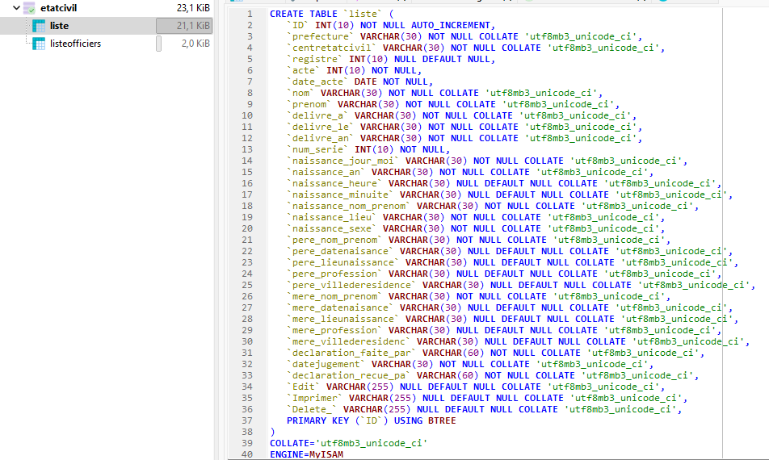
Version copier/coller :
CREATE TABLE `liste` (
`ID` INT(10) NOT NULL AUTO_INCREMENT,
`prefecture` VARCHAR(30) NOT NULL COLLATE 'utf8mb3_unicode_ci',
`centretatcivil` VARCHAR(30) NOT NULL COLLATE 'utf8mb3_unicode_ci',
`registre` INT(10) NULL DEFAULT NULL,
`acte` INT(10) NOT NULL,
`date_acte` DATE NOT NULL,
`nom` VARCHAR(30) NOT NULL COLLATE 'utf8mb3_unicode_ci',
`prenom` VARCHAR(30) NOT NULL COLLATE 'utf8mb3_unicode_ci',
`delivre_a` VARCHAR(30) NOT NULL COLLATE 'utf8mb3_unicode_ci',
`delivre_le` VARCHAR(30) NOT NULL COLLATE 'utf8mb3_unicode_ci',
`delivre_an` VARCHAR(30) NOT NULL COLLATE 'utf8mb3_unicode_ci',
`num_serie` INT(10) NOT NULL,
`naissance_jour_moi` VARCHAR(30) NOT NULL COLLATE 'utf8mb3_unicode_ci',
`naissance_an` VARCHAR(30) NOT NULL COLLATE 'utf8mb3_unicode_ci',
`naissance_heure` VARCHAR(30) NULL DEFAULT NULL COLLATE 'utf8mb3_unicode_ci',
`naissance_minuite` VARCHAR(30) NULL DEFAULT NULL COLLATE 'utf8mb3_unicode_ci',
`naissance_nom_prenom` VARCHAR(30) NOT NULL COLLATE 'utf8mb3_unicode_ci',
`naissance_lieu` VARCHAR(30) NOT NULL COLLATE 'utf8mb3_unicode_ci',
`naissance_sexe` VARCHAR(30) NOT NULL COLLATE 'utf8mb3_unicode_ci',
`pere_nom_prenom` VARCHAR(30) NOT NULL COLLATE 'utf8mb3_unicode_ci',
`pere_datenaisance` VARCHAR(30) NULL DEFAULT NULL COLLATE 'utf8mb3_unicode_ci',
`pere_lieunaissance` VARCHAR(30) NULL DEFAULT NULL COLLATE 'utf8mb3_unicode_ci',
`pere_profession` VARCHAR(30) NULL DEFAULT NULL COLLATE 'utf8mb3_unicode_ci',
`pere_villederesidence` VARCHAR(30) NULL DEFAULT NULL COLLATE 'utf8mb3_unicode_ci',
`mere_nom_prenom` VARCHAR(30) NOT NULL COLLATE 'utf8mb3_unicode_ci',
`mere_datenaisance` VARCHAR(30) NULL DEFAULT NULL COLLATE 'utf8mb3_unicode_ci',
`mere_lieunaissance` VARCHAR(30) NULL DEFAULT NULL COLLATE 'utf8mb3_unicode_ci',
`mere_profession` VARCHAR(30) NULL DEFAULT NULL COLLATE 'utf8mb3_unicode_ci',
`mere_villederesidenc` VARCHAR(30) NULL DEFAULT NULL COLLATE 'utf8mb3_unicode_ci',
`declaration_faite_par` VARCHAR(60) NOT NULL COLLATE 'utf8mb3_unicode_ci',
`datejugement` VARCHAR(30) NOT NULL COLLATE 'utf8mb3_unicode_ci',
`declaration_recue_pa` VARCHAR(60) NOT NULL COLLATE 'utf8mb3_unicode_ci',
`Edit` VARCHAR(255) NULL DEFAULT NULL COLLATE 'utf8mb3_unicode_ci',
`Imprimer` VARCHAR(255) NULL DEFAULT NULL COLLATE 'utf8mb3_unicode_ci',
`Delete_` VARCHAR(255) NULL DEFAULT NULL COLLATE 'utf8mb3_unicode_ci',
PRIMARY KEY (`ID`) USING BTREE
)
COLLATE='utf8mb3_unicode_ci'
ENGINE=MyISAM
AUTO_INCREMENT=72
;
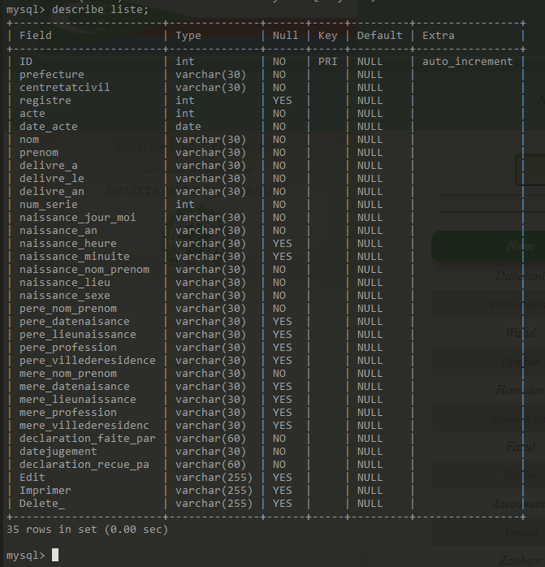
On peut toujours trouver les tables dans le dossier /sql ⚠️
9. Structure et installation 👉 (sans framework)
9.1: Structure (MVC)
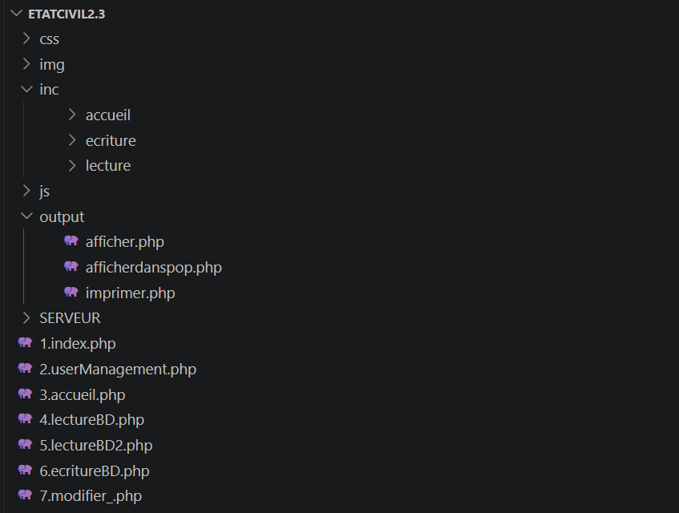
9.2: Installation
- Un moteur php(PHP 7.4, PHP 8.4 - mieux pour maintenir un projet existant, ...)
- Un serveur web( apache, nginx, ... )
- Un serveur de données( mysql, postgree, ...)
Pour linux: ...
Pour mac: ...
TASKS
Task0:
0.1 ecritureBD.php et modifier_.php
👉 Gerer la saisie(interdiction et message) si le numero de document entré existe déjà
INCHA ALLAH
Task1: lectureBD.php (dans Documentation)
1.1 Faire les captures relatifs aux 5 items du menu : "6. Affichage documents"
1.2 Integrer ces images .png et leur ancrage, en attendant les shemas draw.io
1.3 Ajouter classe="scrolbar" dans tous les div#panel des schemas .png (utiliser Paint)
INCHA ALLAH
Task2: accueil.php
2.1 Afficher: Metttre le onclik(qui lance le popup)dans une fonction() ?????????? voir copilote
2.2 Remplacer les liens par des icones:
"Afficher", "Imprimer", "Rectifier","Supprimer".
INCHA ALLAH
Task3: LectureBD.php
3.1 Remplacer les liens "Imprimer" et "Afficher" par des icones
3.2 Afficher: Metttre le onclik(qui lance le popup)dans une fonction() ??????????
INCHA ALLAH
Nombre de fichiers du Projet
C:\laragon\www\etacivil23(b1)
👉 find . -name "*.php" | wc -l
=> 58
- 👉 Un fichier include n'a pas besoin de connection( utilise la connection de la page source)
- 👉 Un fichier header location (redirection ) a besoin de nouvelle connection
- 👉 Les solutions les plus simple sont tjrs les meilleurs